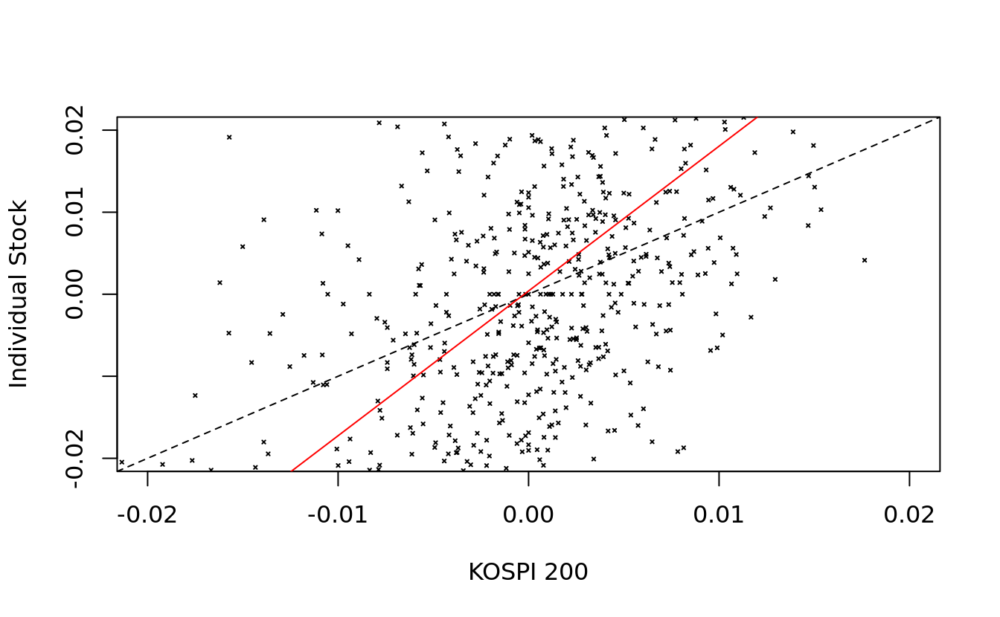
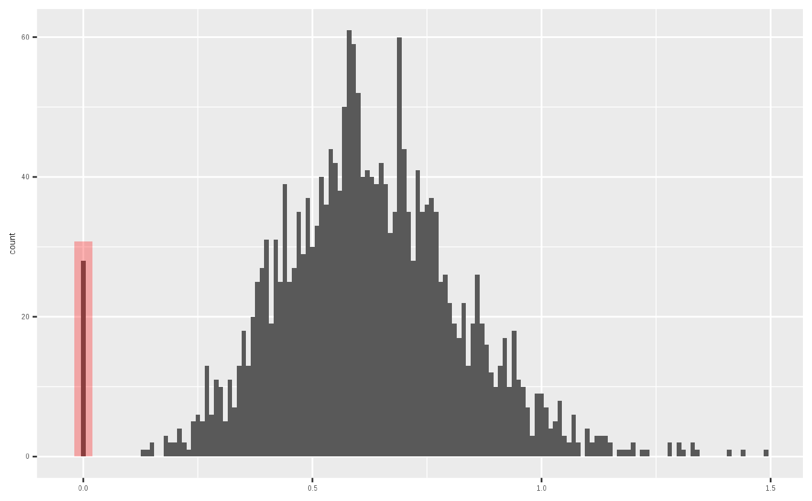
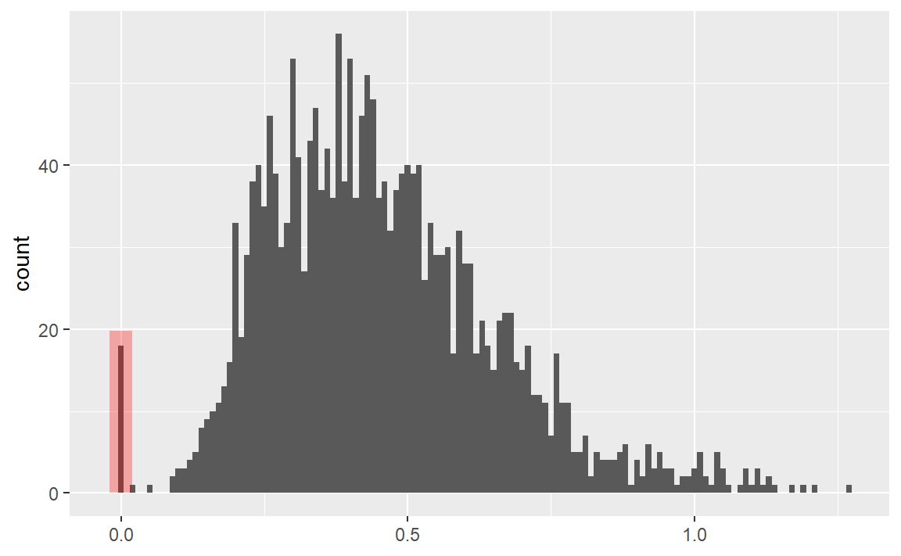
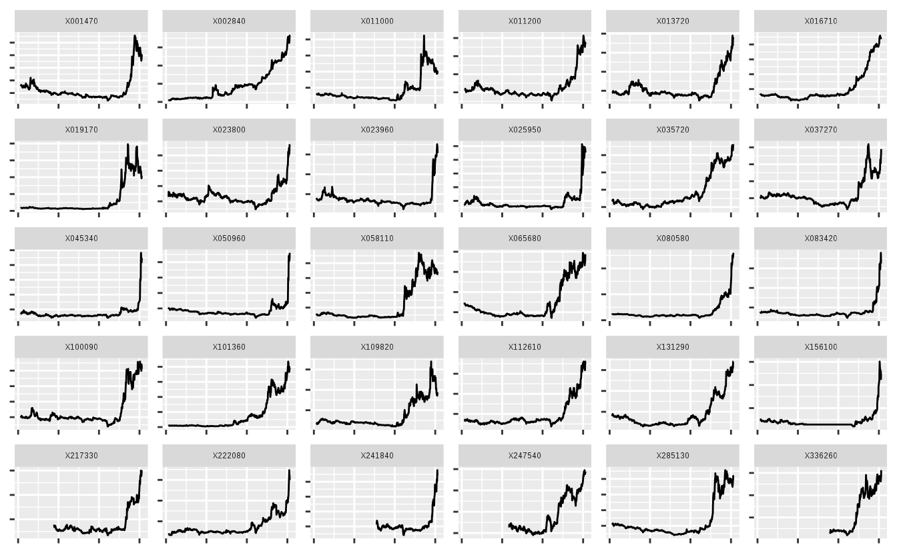
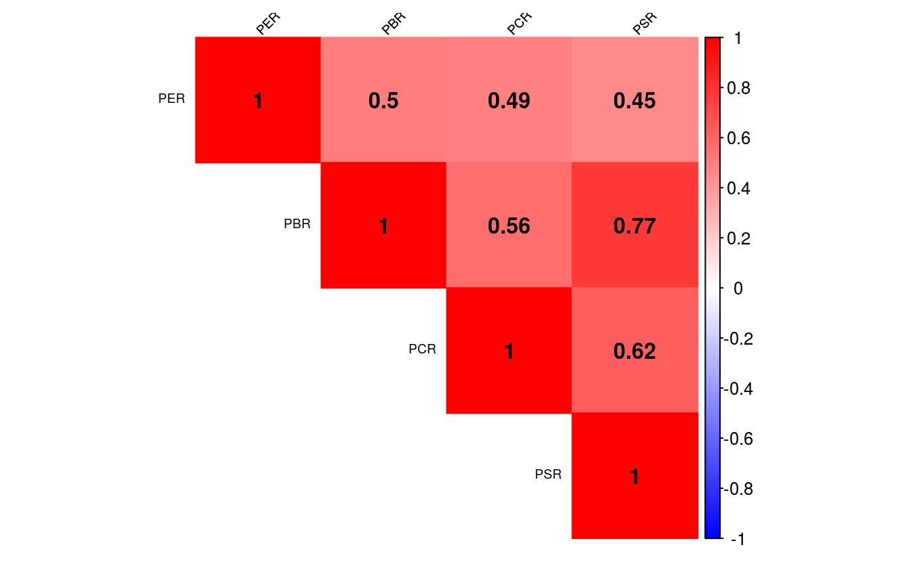
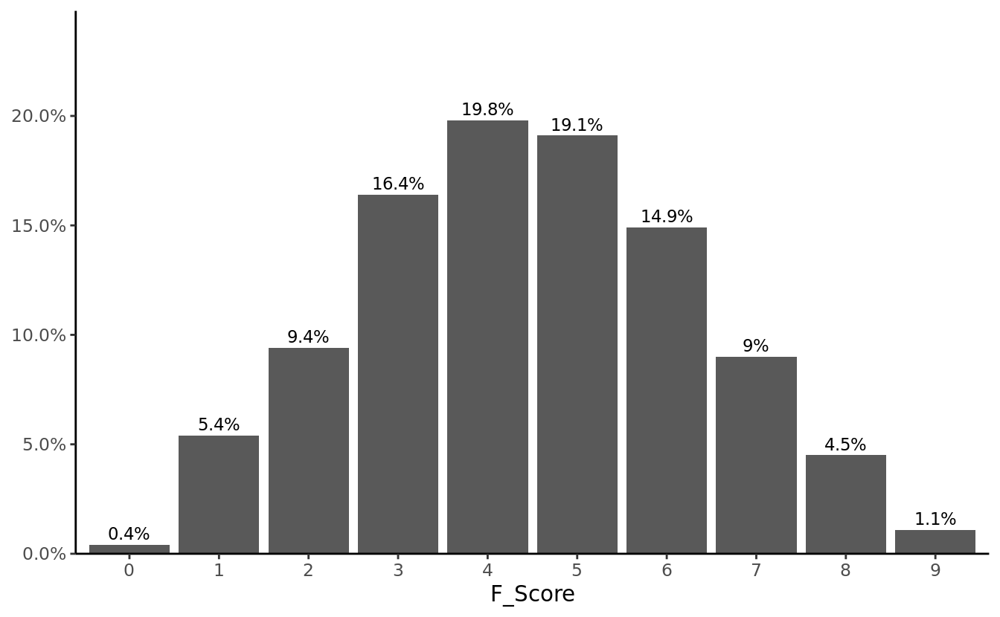
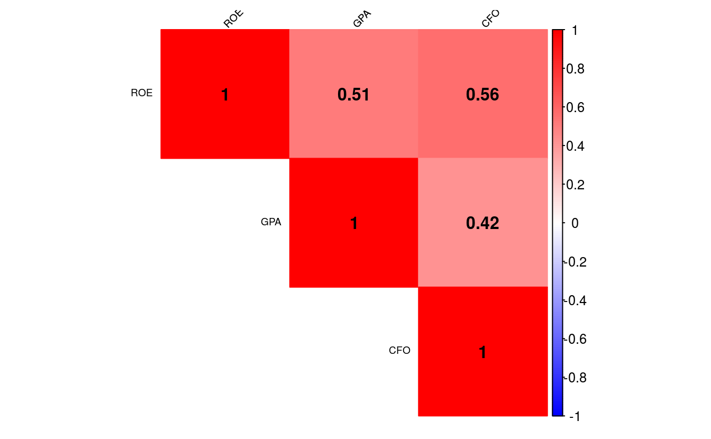

Chapter 9 퀀트 전략을 이용한 종목선정 (기본)
투자에 필요한 주가, 재무제표, 가치지표 데이터가 준비되었다면 퀀트 전략을 활용해 투자하고자 하는 종목을 선정해야 합니다. 퀀트 투자는 크게 포트폴리오 운용 전략과 트레이딩 전략으로 나눌 수 있습니다. 포트폴리오 운용 전략은 과거 주식 시장을 분석해 좋은 주식의 기준을 찾아낸 후 해당 기준에 만족하는 종목을 매수하거나, 이와 반대에 있는 나쁜 주식을 공매도하기도 합니다. 투자의 속도가 느리며, 다수의 종목을 하나의 포트폴리오로 구성해 운용하는 특징이 있습니다. 반면 트레이딩 전략은 단기간에 발생되는 주식의 움직임을 연구한 후 예측해 매수 혹은 매도하는 전략입니다. 투자의 속도가 빠르며 소수의 종목을 대상으로 합니다.
| 기준 | 포트폴리오 운용 전략 | 트레이딩 전략 |
|---|---|---|
| 투자철학 | 규칙에 기반한 투자 | 규칙에 기반한 투자 |
| 투자목적 | 좋은 주식을 매수 | 좋은 시점을 매수 |
| 학문적 기반 | 경제학, 통계학 등 | 통계학, 공학, 정보처리 등 |
| 투자의 속도 | 느림 | 빠름 |
이 중 이 책에서는 포트폴리오에 기반한 운용 전략에 대해 다룹니다. 주식의 수익률에 영향을 미치는 요소를 팩터(Factor)라고 합니다. 즉 팩터의 강도가 양인 종목들로 구성한 포트폴리오는 향후 수익률이 높을 것으로 예상되며, 팩터의 강도가 음인 종목들로 구성한 포트폴리오는 반대로 향후 수익률이 낮을 것으로 예상됩니다.
팩터에 대한 연구는 학자들에 의해 오랫동안 진행되어 왔지만, 일반 투자자들이 이러한 논문을 모두 찾아보고 연구하기는 사실상 불가능에 가깝습니다. 그러나 최근에는 스마트 베타라는 이름으로 팩터 투자가 대중화되고 있습니다. 최근 유행하고 있는 스마트 베타 ETF는 팩터를 기준으로 포트폴리오를 구성한 상품으로서, 학계나 실무에서 검증된 팩터 전략을 기반으로 합니다.
해당 상품들의 웹사이트나 투자설명서에는 종목 선정 기준에 대해 자세히 나와 있으므로 스마트 베타 ETF에 나와 있는 투자 전략을 자세히 분석하는 것만으로도 훌륭한 퀀트 투자 전략을 만들 수 있습니다.

그림 2.1: 스마트베타 ETF 전략 예시
이 CHAPTER에서는 투자에 많이 활용되는 기본적인 팩터에 대해 알아보고, 우리가 구한 데이터를 바탕으로 각 팩터별 투자 종목을 선택하는 방법을 알아보겠습니다.
9.1 베타 이해하기
투자자들이라면 누구나 한 번은 베타(Beta)라는 용어를 들어봤을 것입니다. 기본적으로 주식시장의 움직임은 개별 주식의 수익률에 가장 크게 영향을 주는 요소일 수밖에 없습니다. 아무리 좋은 주식도 주식시장이 폭락한다면 같이 떨어지며, 아무리 나쁜 주식도 주식시장이 상승한다면 대부분 같이 오르기 마련입니다.
개별 주식이 전체 주식시장의 변동에 반응하는 정도를 나타낸 값이 베타입니다. 베타가 1이라는 뜻은 주식시장과 움직임이 정확히 같다는 뜻으로서 시장 그 자체를 나타냅니다. 베타가 1.5라는 뜻은 주식시장이 수익률이 +1%일 때 개별 주식의 수익률은 +1.5% 움직이며, 반대로 주식시장의 수익률이 -1%일 때 개별 주식의 수익률은 -1.5% 움직인다는 뜻입니다. 반면 베타가 0.5라면 주식시장 수익률의 절반 정도만 움직이게 됩니다.
| 베타 | 주식시장이 +1% 일 경우 | 주식시장이 -1% 일 경우 |
|---|---|---|
| 0.5 | +0.5% | -0.5% |
| 1.0 | +1.0% | -1.0% |
| 1.5 | +1.5% | -1.5% |
이처럼 베타가 큰 주식은 주식시장보다 수익률의 움직임이 크며, 반대로 베타가 낮은 주식은 주식시장보다 수익률의 움직임이 작습니다. 따라서 일반적으로 상승장이 기대될 때는 베타가 큰 주식에, 하락장이 기대될 때는 베타가 낮은 주식에 투자하는 것이 좋습니다.
주식시장에서 베타는 통계학의 회귀분석모형에서 기울기를 나타내는 베타와 정확히 의미가 같습니다. 회귀분석모형은 \(y = a + bx\) 형태로 나타나며, 회귀계수인 \(b\)는 \(x\)의 변화에 따른 \(y\)의 변화의 기울기입니다. 이를 주식에 적용한 모형이 자산가격결정모형(CAPM: Capital Asset Pricing Model)(Sharpe 1964)이며, 그 식은 다음과 같습니다.
\[회귀분석모형: y = a + bx\] \[자산가격결정모형: R_i = R_f + \beta_i\times[R_m - R_f]\]
먼저 회귀분석모형의 상수항인 \(a\)에 해당하는 부분은 무위험 수익률을 나타내는 \(R_f\)입니다. 독립변수인 \(x\)에 해당하는 부분은 무위험 수익률 대비 주식 시장의 초과 수익률을 나타내는 시장위험 프리미엄인 \(R_m - R_f\)입니다. 종속변수인 \(y\)에 해당하는 부분은 개별주식의 수익률을 나타내는 \(R_i\)이며, 최종적으로 회귀계수인 \(b\)에 해당하는 부분은 개별 주식의 베타입니다.
| 구분 | 회귀분석모형 | 자산가격결정모형 |
|---|---|---|
| 상수항 | a | \(R_f\) (무위험 수익률) |
| 독립변수 | x | \(R_m - R_f\) (시장위험 프리미엄) |
| 종속변수 | y | \(R_i\) (개별주식의 수익률) |
| 회귀계수 | b | \(\beta_i\) (개별주식의 베타) |
통계학에서 회귀계수는 \(\beta = \frac{cov(x,y)}{\sigma_x^2}\) 형태로 구할 수 있으며, \(x\)와 \(y\)에 각각 시장수익률과 개별주식의 수익률을 대입할 경우 개별주식의 베타는 \(\beta_i= \rho(i,m) \times\frac{\sigma_i}{\sigma_m}\) 형태로 구할 수 있습니다. 그러나 이러한 수식을 모르더라도 R에서는 간단히 베타를 구할 수 있습니다.
9.1.1 베타 계산하기
베타를 구하는 방법을 알아보기 위해 주식시장에 대한 대용치로 KOSPI 200 ETF, 개별주식으로는 전통적 고베타주인 증권주를 이용하겠습니다.
library(quantmod)
library(PerformanceAnalytics)
library(magrittr)
symbols = c('102110.KS', '039490.KS')
getSymbols(symbols)## [1] "102110.KS" "039490.KS"prices = do.call(cbind,
lapply(symbols, function(x)Cl(get(x))))
ret = Return.calculate(prices)
ret = ret['2016-01::2018-12']- KOSPI 200 ETF인 TIGER 200(102110.KS), 증권주인 키움증권(039490.KS)의 티커를 입력합니다.
getSymbols()함수를 이용하여 해당 티커들의 데이터를 다운로드 받습니다.lapply()함수 내에Cl()과get()함수를 사용하여 종가에 해당하는 데이터만 추출하며, 리스트 형태의 데이터를 열의 형태로 묶어주기 위해do.call()함수와cbind()함수를 사용해 줍니다.Return.calculate()함수를 통해 수익률을 계산해 줍니다.- xts 형식의 데이터는 대괄호 속에 [‘시작일자::종료일자’]와 같은 형태로, 원하는 날짜를 편리하게 선택할 수 있으며, 위에서는 2016년 1월부터 2018년 12월 까지 데이터를 선택합니다.
##
## Call:
## lm(formula = ri ~ rm)
##
## Residuals:
## Min 1Q Median 3Q Max
## -0.06890 -0.01296 -0.00171 0.01082 0.09541
##
## Coefficients:
## Estimate Std. Error t value Pr(>|t|)
## (Intercept) 0.000400 0.000728 0.55 0.58
## rm 1.764722 0.091131 19.36 <2e-16 ***
## ---
## Signif. codes:
## 0 '***' 0.001 '**' 0.01 '*' 0.05 '.' 0.1 ' ' 1
##
## Residual standard error: 0.0196 on 721 degrees of freedom
## (8 observations deleted due to missingness)
## Multiple R-squared: 0.342, Adjusted R-squared: 0.341
## F-statistic: 375 on 1 and 721 DF, p-value: <2e-16증권주를 대상으로 베타를 구하기 위한 회귀분석을 실시합니다. 자산가격결정모형의 수식인 \(R_i = R_f + \beta_i \times [R_m - R_f]\) 에서 편의를 위해 무위험 수익률인 \(R_f\)를 0으로 가정하면, \(R_i = \beta_i \times R_m\)의 형태로 나타낼 수 있습니다. 이 중 \(R_m\)는 독립변수인 주식시장의 수익률을 의미하고, \(R_i\)는 종속변수인 개별 주식의 수익률을 의미합니다.
- 독립변수는 첫 번째 열인 KOSPI 200 ETF의 수익률을 선택하며, 종속변수는 두번째 열인 증권주의 수익률을 선택합니다.
lm()함수를 통해 손쉽게 선형회귀분석을 실시할 수 있으며, 회귀분석의 결과를 reg 변수에 저장합니다.summary()함수는 데이터의 요약 정보를 나타내며, 해당 예시에서는 회귀분석 결과에 대한 정보를 보여줍니다.
회귀분석의 결과 중 가장 중요한 부분은 계수를 나타내는 Coefficients입니다. Intercept는 회귀분석의 상수항에 해당하는 부분으로서, 값이 거의 0에 가깝고 t값 또한 매우 작아 유의하지 않음이 보입니다. 우리가 원하는 베타에 해당하는 부분 은 \(x\)의 Estimate로서, 베타값이 1.76으로 증권주의 특성인 고베타주임이 확인되며, t값 또한 19.36로 매우 유의한 결과입니다. 조정된 결정계수(Adjusted R-square)는 0.34를 보입니다.
9.1.2 베타 시각화
이제 구해진 베타를 그림으로 표현해보겠습니다.
plot(as.numeric(rm), as.numeric(ri), pch = 4, cex = 0.3,
xlab = "KOSPI 200", ylab = "Individual Stock",
xlim = c(-0.02, 0.02), ylim = c(-0.02, 0.02))
abline(a = 0, b = 1, lty = 2)
abline(reg, col = 'red')
plot()함수를 통해 그림을 그려주며, x축과 y축에 주식시장 수익률과 개별 주식 수익률을 입력합니다. pch는 점들의 모양을, cex는 점들의 크기를 나타내며, xlab과 ylab은 각각 x축과 y축에 들어갈 문구를 나타냅니다. xlim과 ylim은 x 축과 y축의 최소 및 최대 범위를 지정해줍니다.- 첫번째
abline()에서 a는 상수, b는 직선의 기울기, lty는 선의 유형을 나타냅니다. 이를 통해 기울기, 즉 베타가 1일 경우의 선을 점선으로 표현합니다. - 두번째
abline()에 회귀분석 결과를 입력해주면 자동적으로 회귀식을 그려줍니다.
검은색의 점선이 기울기가 1인 경우이며, 주황색의 직선이 증권주의 회귀분석결과를 나타냅니다. 기울기가 1보다 훨씬 가파름이 확인되며, 즉 베타가 1보다 크다는 사실을 알 수 있습니다.
9.2 저변동성 전략
금융 시장에서 변동성은 수익률이 움직이는 정도로서, 일반적으로 표준편차가 사용됩니다. 표준편차는 자료가 평균을 중심으로 얼마나 퍼져 있는지를 나타내는 수치로서, 수식은 다음과 같습니다.
\[\sigma = \sqrt{\frac{\sum_{i=1}^{n}{(x_i - \bar{x})^2}}{n-1}}\]
관측값의 개수가 적을 경우에는 수식에 대입해 계산하는 것이 가능하지만, 관측값이 수백 혹은 수천 개로 늘어날 경우 컴퓨터를 이용하지 않고 계산하기는 사실상 불가능합니다. R에서는 복잡한 계산 과정 없이 sd() 함수를 이용해 간단하게 표준편차를 계산할 수 있습니다.
## [1] 5.357개별 주식의 표준편차를 측정할 때는 주식의 가격이 아닌 수익률로 계산해야 합니다. 수익률의 표준편차가 크면 수익률이 위아래로 많이 움직여 위험한 종목으로 여겨집니다. 반면 표준편차가 작으면 수익률의 움직임이 적어 상대적으로 안전한 종목으로 여겨집니다.
전통적 금융 이론에서는 수익률의 변동성이 클수록 위험이 크고, 이런 위험에 대한 보상으로 기대수익률이 높아야 한다고 보았습니다. 따라서 고변동성 종목의 기대수익률이 크고, 저변동성 종목의 기대수익률이 낮은 고위험 고수익이 당연한 믿음이었습니다. 그러나 현실에서는 오히려 변동성이 낮은 종목들의 수익률이 변동성이 높은 종목들의 수익률보다 높은, 저변동성 효과가 발견되고 있습니다. 이러한 저변동성 효과가 발생하는 원인으로는 여러 가설이 있습니다.
투자자들은 대체로 자신의 능력을 과신하는 경향이 있으며, 복권과 같이 큰 수익을 가져다 주는 고변동성 주식을 선호하는 경향이 있습니다. 이러한 결과로 고변동성 주식은 과대 평가되어 수익률이 낮은 반면, 과소 평가된 저변동성 주식들은 높은 수익률을 보이게 됩니다. (Brunnermeier and Parker 2005)
대부분 기관투자가들이 레버리지 투자가 되지 않는 상황에서, 벤치마크 대비 높은 성과를 얻기 위해 고변동성 주식에 투자하는 경향이 있으며, 이 또한 고변동성 주식이 과대 평가되는 결과로 이어집니다. (Baker, Bradley, and Wurgler 2011)
시장의 상승과 하락이 반복됨에 따라 고변동성 주식이 변동성 손실(Volatility Drag)로 인해 수익률이 하락하게 되는 이유도 있습니다. (Sefton et al. 2011)
주식의 위험은 변동성뿐만 아니라 베타 등 여러 지표로도 측정할 수 있습니다. 저변동성 효과와 비슷하게 고유변동성이 낮은 주식의 수익률이 높은 저고유변동성 효과(Ang et al. 2009), 베타가 낮은 주식의 수익률이 오히려 높은 저베타 효과(Baker, Bradley, and Taliaferro 2014)도 발견되고 있으며, 이러한 효과들을 합쳐 저위험 효과라고 부르기도 합니다.
9.2.1 저변동성 포트폴리오 구하기: 일간 기준
먼저 최근 1년 일간 수익률 기준 변동성이 낮은 30종목을 선택하겠습니다.
library(stringr)
library(xts)
library(PerformanceAnalytics)
library(magrittr)
library(ggplot2)
library(dplyr)
KOR_price = read.csv('data/KOR_price.csv', row.names = 1,
stringsAsFactors = FALSE) %>% as.xts()
KOR_ticker = read.csv('data/KOR_ticker.csv', row.names = 1,
stringsAsFactors = FALSE)
KOR_ticker$'종목코드' =
str_pad(KOR_ticker$'종목코드', 6, 'left', 0)
ret = Return.calculate(KOR_price)
std_12m_daily = xts::last(ret, 252) %>% apply(., 2, sd) %>%
multiply_by(sqrt(252))- 저장해둔 가격 정보와 티커 정보를 불러옵니다. 가격 정보는
as.xts()함수를 통해 xts 형태로 변경합니다. Return.calculate()함수를 통해 수익률을 구합니다.last()함수는 마지막 n개 데이터를 선택해주는 함수이며, 1년 영업일 기준인 252개 데이터를 선택합니다. dplyr 패키지의last()함수와 이름이 같으므로,xts::last()형식을 통해 xts 패키지의 함수임을 정의해줍니다.apply()함수를 통해 sd 즉 변동성을 계산해주며, 연율화를 해주기 위해multiply_by()함수를 통해 \(\sqrt{252}\)를 곱해줍니다.
std_12m_daily %>%
data.frame() %>%
ggplot(aes(x = (`.`))) +
geom_histogram(binwidth = 0.01) +
annotate("rect", xmin = -0.02, xmax = 0.02,
ymin = 0,
ymax = sum(std_12m_daily == 0, na.rm = TRUE) * 1.1,
alpha=0.3, fill="red") +
xlab(NULL)
std_12m_daily[std_12m_daily == 0] = NA
변동성을 히스토그램으로 나타내보면, 0에 위치하는 종목들이 다수 있습니다. 해당 종목들은 최근 1년간 거래정지로 인해 가격이 변하지 않았고, 이로 인해 변동성이 없는 종목들입니다. 해당 종목들은 NA로 처리해줍니다.
## X002840 X268280 X001720 X034950 X072710 X016800 X000480
## 0.2360 0.1799 0.2445 0.2305 0.2406 0.1458 0.2163
## X092130 X015360 X004890 X107590 X100250 X171120 X024090
## 0.2577 0.2477 0.2176 0.2552 0.2173 0.2566 0.2383
## X134380 X003460 X007330 X034590 X040420 X005190 X007590
## 0.1793 0.2340 0.1950 0.1826 0.2324 0.2461 0.2417
## X083660 X273060 X109860 X084670 X037440 X221980 X168330
## 0.2506 0.1736 0.2471 0.2411 0.2433 0.2439 0.2190
## X043100 X028040
## 0.2034 0.2571std_12m_daily[rank(std_12m_daily) <= 30] %>%
data.frame() %>%
ggplot(aes(x = rep(1:30), y = `.`)) +
geom_col() +
xlab(NULL)
rank() 함수를 통해 순위를 구할 수 있으며, R은 기본적으로 오름차순 즉 가장 낮은값의 순위가 1이 됩니다. 따라서 변동성이 낮을수록 높은 순위가 되며, 30위 이하의 순위를 선택하면 변동성이 낮은 30종목이 선택됩니다. 또한 ggplot() 함수를 이용해 해당 종목들의 변동성을 확인해볼 수도 있습니다.
이번에는 해당 종목들의 티커 및 종목명을 확인하겠습니다.
invest_lowvol = rank(std_12m_daily) <= 30
KOR_ticker[invest_lowvol, ] %>%
select(`종목코드`, `종목명`) %>%
mutate(`변동성` = round(std_12m_daily[invest_lowvol], 4))## 종목코드 종목명 변동성
## 1 002840 미원상사 0.2360
## 2 268280 미원에스씨 0.1799
## 3 001720 신영증권 0.2445
## 4 034950 한국기업평가 0.2305
## 5 072710 농심홀딩스 0.2406
## 6 016800 퍼시스 0.1458
## 7 000480 조선내화 0.2163
## 8 092130 이크레더블 0.2577
## 9 015360 예스코홀딩스 0.2477
## 10 004890 동일산업 0.2176
## 11 107590 미원홀딩스 0.2552
## 12 100250 진양홀딩스 0.2173
## 13 171120 라이온켐텍 0.2566
## 14 024090 디씨엠 0.2383
## 15 134380 미원화학 0.1793
## 16 003460 유화증권 0.2340
## 17 007330 푸른저축은행 0.1950
## 18 034590 인천도시가스 0.1826
## 19 040420 정상제이엘에스 0.2324
## 20 005190 동성화학 0.2461
## 21 007590 동방아그로 0.2417
## 22 083660 CSA 코스믹 0.2506
## 23 273060 와이즈버즈 0.1736
## 24 109860 동일금속 0.2471
## 25 084670 동양고속 0.2411
## 26 037440 희림 0.2433
## 27 221980 케이디켐 0.2439
## 28 168330 내츄럴엔도텍 0.2190
## 29 043100 솔고바이오 0.2034
## 30 028040 미래SCI 0.2571티커와 종목명, 연율화 변동성을 확인할 수 있습니다.
9.2.2 저변동성 포트폴리오 구하기: 주간 기준
이번에는 일간 변동성이 아닌 주간 변동성을 기준으로 저변동성 종목을 선택하겠습니다.
std_12m_weekly = xts::last(ret, 252) %>%
apply.weekly(Return.cumulative) %>%
apply(., 2, sd) %>% multiply_by(sqrt(52))
std_12m_weekly[std_12m_weekly == 0] = NA먼저 최근 252일 수익률울 선택한 후, apply.weekly() 함수 내 Return.cumulative를 입력해 주간 수익률을 계산하며, 연율화를 위해 연간 주수에 해당하는 \(\sqrt{52}\)를 곱해줍니다. 이 외에도 apply.monthly(), apply.yearly() 함수 등으로 일간 수익률을 월간, 연간 수익률 등으로 변환할 수 있습니다. 그 후 과정은 위와 동일합니다.
## X339770 X268280 X317690 X330860 X016800 X000480 X129890
## 0.18771 0.17016 0.05877 0.17550 0.11297 0.21040 0.15834
## X356860 X199820 X352770 X337930 X053080 X117580 X134380
## 0.06498 0.17646 0.02620 0.22642 0.16129 0.20453 0.21112
## X003460 X007330 X265740 X244920 X034590 X040420 X318410
## 0.17165 0.19993 0.09985 0.09768 0.15704 0.17772 0.14302
## X273060 X109860 X339950 X115310 X037440 X221980 X168330
## 0.14561 0.19354 0.22626 0.18483 0.21752 0.22142 0.21990
## X043100 X347140
## 0.15530 0.03563invest_lowvol_weekly = rank(std_12m_weekly) <= 30
KOR_ticker[invest_lowvol_weekly, ] %>%
select(`종목코드`, `종목명`) %>%
mutate(`변동성` =
round(std_12m_weekly[invest_lowvol_weekly], 4))## 종목코드 종목명 변동성
## 1 339770 교촌에프앤비 0.1877
## 2 268280 미원에스씨 0.1702
## 3 317690 퀀타매트릭스 0.0588
## 4 330860 네패스아크 0.1755
## 5 016800 퍼시스 0.1130
## 6 000480 조선내화 0.2104
## 7 129890 앱코 0.1583
## 8 356860 티엘비 0.0650
## 9 199820 제일전기공업 0.1765
## 10 352770 클리노믹스 0.0262
## 11 337930 브랜드엑스코퍼레이션 0.2264
## 12 053080 원방테크 0.1613
## 13 117580 대성에너지 0.2045
## 14 134380 미원화학 0.2111
## 15 003460 유화증권 0.1716
## 16 007330 푸른저축은행 0.1999
## 17 265740 엔에프씨 0.0998
## 18 244920 에이플러스에셋 0.0977
## 19 034590 인천도시가스 0.1570
## 20 040420 정상제이엘에스 0.1777
## 21 318410 비비씨 0.1430
## 22 273060 와이즈버즈 0.1456
## 23 109860 동일금속 0.1935
## 24 339950 아이비김영 0.2263
## 25 115310 인포바인 0.1848
## 26 037440 희림 0.2175
## 27 221980 케이디켐 0.2214
## 28 168330 내츄럴엔도텍 0.2199
## 29 043100 솔고바이오 0.1553
## 30 347140 케이프이에스제4호 0.0356주간 수익률의 변동성이 낮은 30종목을 선택해 종목코드, 종목명, 연율화 변동성을 확인합니다.
## [1] "미원에스씨" "퍼시스" "조선내화"
## [4] "미원화학" "유화증권" "푸른저축은행"
## [7] "인천도시가스" "정상제이엘에스" "와이즈버즈"
## [10] "동일금속" "희림" "케이디켐"
## [13] "내츄럴엔도텍" "솔고바이오"intersect() 함수를 통해 일간 변동성 기준과 주간 변동성 기준 모두에 포함되는 종목을 찾을 수 있습니다.
9.3 모멘텀 전략
투자에서 모멘텀이란 주가 혹은 이익의 추세로서, 상승 추세의 주식은 지속적으로 상승하며 하락 추세의 주식은 지속적으로 하락하는 현상을 말합니다. 모멘텀 현상이 발생하는 가장 큰 원인은 투자자들의 스스로에 대한 과잉 신뢰 때문입니다. 사람들은 자신의 판단을 지지하는 정보에 대해서는 과잉 반응하고, 자신의 판단을 부정하는 정보에 대해서는 과소 반응하는 경향이 있습니다. 이러한 투자자들의 비합리성으로 인해모멘텀 현상이 생겨나게 됩니다.
모멘텀의 종류는 크게 기업의 이익에 대한 추세를 나타내는 이익 모멘텀(Rendleman Jr, Jones, and Latane 1982)과, 주가의 모멘텀에 대한 가격 모멘텀이 있습니다. 또한 가격 모멘텀도 1주일(Lehmann 1990) 혹은 1개월 이하(Jegadeesh 1990)를 의미하는 단기 모멘텀, 3개월에서 12개월을 의미하는 중기 모멘텀(Jegadeesh and Titman 1993), 3년에서 5년을 의미하는 장기 모멘텀(De Bondt and Thaler 1985)이 있으며, 이 중에서도 3개월에서 12개월 가격 모멘텀을 흔히 모멘텀이라고 합니다.
9.3.1 모멘텀 포트폴리오 구하기: 12개월 모멘텀
먼저 최근 1년 동안의 수익률이 높은 30종목을 선택하겠습니다.
library(stringr)
library(xts)
library(PerformanceAnalytics)
library(magrittr)
library(dplyr)
KOR_price = read.csv('data/KOR_price.csv', row.names = 1,
stringsAsFactors = FALSE) %>% as.xts()
KOR_ticker = read.csv('data/KOR_ticker.csv', row.names = 1,
stringsAsFactors = FALSE)
KOR_ticker$'종목코드' =
str_pad(KOR_ticker$'종목코드', 6, 'left', 0)
ret = Return.calculate(KOR_price) %>% xts::last(252)
ret_12m = ret %>% sapply(., function(x) {
prod(1+x) - 1
})- 가격 정보와 티커 정보를 불러온 후
Return.calculate()함수를 통해 수익률을 계산합니다. 그 후 최근 252일 수익률을 선택합니다. sapply()함수 내부에prod()함수를 이용해 각 종목의 누적수익률을 계산해줍니다.
## X068760 X019170 X096530 X196170 X285130 X336260 X112610
## 5.870 20.825 6.687 4.984 5.206 6.305 3.952
## X003090 X011000 X101490 X131370 X122450 X100090 X290650
## 4.449 9.623 3.365 5.248 6.086 3.869 3.470
## X001470 X018000 X217270 X036810 X109820 X068330 X285490
## 5.555 4.118 3.346 3.335 10.806 3.433 3.742
## X101360 X082850 X033310 X205470 X256940 X058110 X080580
## 7.531 5.578 3.522 8.058 3.286 9.270 5.042
## X131220 X025950
## 3.767 4.135rank() 함수를 통해 순위를 구합니다. 모멘텀의 경우 높을수록 좋은 내림차순으로 순위를 계산해야 하므로 수익률 앞에 마이너스(-)를 붙여줍니다. 12개월 누적수익률이 높은 종목들이 선택됨이 확인됩니다.
invest_mom = rank(-ret_12m) <= 30
KOR_ticker[invest_mom, ] %>%
select(`종목코드`, `종목명`) %>%
mutate(`수익률` = round(ret_12m[invest_mom], 4))## 종목코드 종목명 수익률
## 1 068760 셀트리온제약 5.870
## 2 019170 신풍제약 20.825
## 3 096530 씨젠 6.688
## 4 196170 알테오젠 4.984
## 5 285130 SK케미칼 5.206
## 6 336260 두산퓨얼셀 6.305
## 7 112610 씨에스윈드 3.952
## 8 003090 대웅 4.449
## 9 011000 진원생명과학 9.623
## 10 101490 에스앤에스텍 3.365
## 11 131370 알서포트 5.248
## 12 122450 KMH 6.086
## 13 100090 삼강엠앤티 3.869
## 14 290650 엘앤씨바이오 3.470
## 15 001470 삼부토건 5.555
## 16 018000 유니슨 4.118
## 17 217270 넵튠 3.346
## 18 036810 에프에스티 3.335
## 19 109820 진매트릭스 10.806
## 20 068330 일신바이오 3.433
## 21 285490 노바텍 3.743
## 22 101360 이엔드디 7.531
## 23 082850 우리바이오 5.578
## 24 033310 엠투엔 3.522
## 25 205470 휴마시스 8.058
## 26 256940 케이피에스 3.286
## 27 058110 멕아이씨에스 9.270
## 28 080580 오킨스전자 5.042
## 29 131220 대한과학 3.767
## 30 025950 동신건설 4.135티커와 종목명, 누적수익률을 확인할 수 있습니다.
9.3.2 모멘텀 포트폴리오 구하기: 위험조정 수익률
단순히 과거 수익률로만 모멘텀 종목을 선택하면 각종 테마나 이벤트에 따른 급등으로 인해 변동성이 지나치게 높은 종목이 있을 수도 있습니다. 누적수익률을 변동성으로 나누어 위험을 고려해줄 경우, 이러한 종목은 제외되며 상대적으로 안정적인 모멘텀 종목을 선택할 수 있습니다.
ret = Return.calculate(KOR_price) %>% xts::last(252)
ret_12m = ret %>% sapply(., function(x) {
prod(1+x) - 1
})
std_12m = ret %>% apply(., 2, sd) %>% multiply_by(sqrt(252))
sharpe_12m = ret_12m / std_12m- 최근 1년에 해당하는 수익률을 선택합니다.
sapply()와prod()함수를 이용해 분자에 해당하는 누적수익률을 계산합니다.apply()와multiply_by()이용해 분모에 해당하는 연율화 변동성을 계산합니다.- 수익률을 변동성으로 나누어 위험조정 수익률을 계산해줍니다.
이를 통해 수익률이 높으면서 변동성이 낮은 종목을 선정할 수 있습니다.
invest_mom_sharpe = rank(-sharpe_12m) <= 30
KOR_ticker[invest_mom_sharpe, ] %>%
select(`종목코드`, `종목명`) %>%
mutate(`수익률` = round(ret_12m[invest_mom_sharpe], 2),
`변동성` = round(std_12m[invest_mom_sharpe], 2),
`위험조정 수익률` =
round(sharpe_12m[invest_mom_sharpe], 2)) %>%
as_tibble() %>%
print(n = Inf)## # A tibble: 30 x 5
## 종목코드 종목명 수익률 변동성 `위험조정 수익률`…
## <chr> <chr> <dbl> <dbl> <dbl>
## 1 091990 셀트리온헬스케어… 2.53 0.6 4.23
## 2 068760 셀트리온제약 5.87 0.86 6.82
## 3 019170 신풍제약 20.8 1.41 14.8
## 4 096530 씨젠 6.69 1.06 6.34
## 5 196170 알테오젠 4.98 0.91 5.45
## 6 285130 SK케미칼 5.21 0.82 6.32
## 7 011200 HMM 3.19 0.6 5.31
## 8 336260 두산퓨얼셀 6.3 0.99 6.36
## 9 112610 씨에스윈드 3.95 0.69 5.73
## 10 003090 대웅 4.45 1.02 4.37
## 11 011000 진원생명과학 9.62 1.48 6.5
## 12 101490 에스앤에스텍 3.37 0.73 4.61
## 13 131370 알서포트 5.25 1.1 4.75
## 14 122450 KMH 6.09 0.84 7.25
## 15 100090 삼강엠앤티 3.87 0.82 4.74
## 16 290650 엘앤씨바이오 3.47 0.74 4.68
## 17 001470 삼부토건 5.55 0.76 7.34
## 18 018000 유니슨 4.12 0.96 4.27
## 19 131290 티에스이 3.28 0.77 4.23
## 20 109820 진매트릭스 10.8 1.32 8.21
## 21 016710 대성홀딩스 2.15 0.3 7.17
## 22 285490 노바텍 3.74 0.91 4.12
## 23 101360 이엔드디 7.53 0.89 8.44
## 24 082850 우리바이오 5.58 1.16 4.79
## 25 205470 휴마시스 8.06 1.39 5.78
## 26 058110 멕아이씨에스 9.27 1.3 7.15
## 27 156100 엘앤케이바이오… 3.24 0.79 4.08
## 28 080580 오킨스전자 5.04 0.71 7.07
## 29 025950 동신건설 4.13 0.93 4.46
## 30 013720 청보산업 2.75 0.65 4.23티커와 종목명, 누적수익률, 변동성, 위험조정 수익률을 확인할 수 있습니다.
## [1] "셀트리온제약" "신풍제약" "씨젠"
## [4] "알테오젠" "SK케미칼" "두산퓨얼셀"
## [7] "씨에스윈드" "대웅" "진원생명과학"
## [10] "에스앤에스텍" "알서포트" "KMH"
## [13] "삼강엠앤티" "엘앤씨바이오" "삼부토건"
## [16] "유니슨" "진매트릭스" "노바텍"
## [19] "이엔드디" "우리바이오" "휴마시스"
## [22] "멕아이씨에스" "오킨스전자" "동신건설"intersect() 함수를 통해 단순 수익률 및 위험조정 수익률 기준 모두에 포함되는 종목을 찾을 수 있습니다. 다음은 위험조정 수익률 상위 30종목의 가격 그래프입니다.
library(xts)
library(tidyr)
library(ggplot2)
KOR_price[, invest_mom_sharpe] %>%
fortify.zoo() %>%
gather(ticker, price, -Index) %>%
ggplot(aes(x = Index, y = price)) +
geom_line() +
facet_wrap(. ~ ticker, scales = 'free') +
xlab(NULL) +
ylab(NULL) +
theme(axis.text.x=element_blank(),
axis.text.y=element_blank())
9.4 밸류 전략
가치주 효과란 내재 가치 대비 낮은 가격의 주식(저PER, 저PBR 등)이, 내재 가치 대비 비싼 주식보다 수익률이 높은 현상(Basu 1977)을 뜻합니다. 가치 효과가 발생하는 원인에 대한 이론은 다음과 같습니다.
- 위험한 기업은 시장에서 상대적으로 낮은 가격에 거래되며, 이러한 위험을 감당하는 대가로 수익이 발생합니다.
- 투자자들의 성장주에 대한 과잉 반응으로 인해 가치주는 시장에서 소외되며, 제자리를 찾아가는 과정에서 수익이 발생합니다.
기업의 가치를 나타내는 지표는 굉장히 많지만, 일반적으로 PER, PBR, PCR, PSR이 많이 사용됩니다.
9.4.1 밸류 포트폴리오 구하기: 저PBR
먼저 기업의 가치 여부를 판단할 때 가장 많이 사용되는 지표인 PBR을 이용한 포트폴리오를 구성하겠습니다.
library(stringr)
library(ggplot2)
library(dplyr)
KOR_value = read.csv('data/KOR_value.csv', row.names = 1,
stringsAsFactors = FALSE)
KOR_ticker = read.csv('data/KOR_ticker.csv', row.names = 1,
stringsAsFactors = FALSE)
KOR_ticker$'종목코드' =
str_pad(KOR_ticker$'종목코드', 6, 'left', 0)
invest_pbr = rank(KOR_value$PBR) <= 30
KOR_ticker[invest_pbr, ] %>%
select(`종목코드`, `종목명`) %>%
mutate(`PBR` = round(KOR_value[invest_pbr, 'PBR'], 4))## 종목코드 종목명 PBR
## 1 001040 CJ 0.1663
## 2 088350 한화생명 0.1651
## 3 000880 한화 0.1090
## 4 138930 BNK금융지주 0.2084
## 5 000150 두산 0.1301
## 6 003380 하림지주 0.1949
## 7 009970 영원무역홀딩스 0.2070
## 8 032190 다우데이타 0.1779
## 9 001430 세아베스틸 0.1908
## 10 058650 세아홀딩스 0.1066
## 11 003300 한일홀딩스 0.1703
## 12 001390 KG케미칼 0.2181
## 13 001940 KISCO홀딩스 0.1976
## 14 005720 넥센 0.1241
## 15 036530 S&T홀딩스 0.1494
## 16 002030 아세아 0.1359
## 17 003030 세아제강지주 0.1371
## 18 054800 아이디스홀딩스 0.2225
## 19 009200 무림페이퍼 0.1784
## 20 005990 매일홀딩스 0.2013
## 21 006220 제주은행 0.2192
## 22 036000 예림당 0.2210
## 23 012320 경동인베스트 0.1729
## 24 005010 휴스틸 0.1426
## 25 040610 SG&G 0.0857
## 26 025530 SJM홀딩스 0.1790
## 27 006200 한국전자홀딩스 0.1816
## 28 058220 아리온 0.0184
## 29 114570 지스마트글로벌 0.1483
## 30 158310 스타모빌리티 0.2081가치지표들을 저장한 데이터와 티커 데이터를 불러오며, rank()를 통해 PBR이 낮은 30종목을 선택합니다. 그 후 종목코드와 종목명, PBR을 확인합니다. 홀딩스 등 지주사가 그 특성상 저PBR 포트폴리오에 많이 구성되어 있습니다.
9.4.2 각 지표 결합하기
저PBR 하나의 지표만으로도 우수한 성과를 거둘 수 있음은 오랜 기간 증명되고 있습니다. 그러나 저평가 주식이 계속해서 저평가에 머무르는 가치 함정에 빠지지 않으려면 여러 지표를 동시에 볼 필요도 있습니다.
library(corrplot)
rank_value = KOR_value %>%
mutate_all(list(~min_rank(.)))
cor(rank_value, use = 'complete.obs') %>%
round(., 2) %>%
corrplot(method = 'color', type = 'upper',
addCoef.col = 'black', number.cex = 1,
tl.cex = 0.6, tl.srt=45, tl.col = 'black',
col = colorRampPalette(
c('blue', 'white', 'red'))(200),
mar=c(0,0,0.5,0))
먼저 mutate_all() 함수를 이용해 모든 열에 함수를 적용해주며, min_rank()를 통해 순위를 구합니다.
각 열에 해당하는 가치지표별 랭킹을 구한 후 상관관계를 확인하며, NA 종목은 삭제해주기 위해 use = 'complete.obs'를 입력합니다.
corrplot 패키지의 corrplot() 함수를 이용해 상관관계를 그려보면, 같은 가치지표임에도 불구하고 서로 간의 상관관계가 꽤 낮은 지표도 있습니다. 따라서 지표를 통합적으로 고려하면 분산효과를 기대할 수도 있습니다.
rank_sum = rank_value %>%
rowSums()
invest_value = rank(rank_sum) <= 30
KOR_ticker[invest_value, ] %>%
select(`종목코드`, `종목명`) %>%
cbind(round(KOR_value[invest_value, ], 2))## 종목코드 종목명 PER PBR PCR PSR
## 82 078930 GS 6.50 0.32 2.23 0.20
## 117 001040 CJ 9.10 0.17 0.63 0.07
## 248 000150 두산 2.11 0.13 1.13 0.05
## 257 003240 태광산업 6.23 0.24 2.28 0.29
## 313 003380 하림지주 12.09 0.19 1.55 0.09
## 387 009970 영원무역홀딩스 4.41 0.21 1.89 0.19
## 535 084690 대상홀딩스 5.16 0.31 1.88 0.10
## 581 006840 AK홀딩스 11.68 0.23 1.21 0.09
## 592 004690 삼천리 8.69 0.24 1.04 0.09
## 595 058650 세아홀딩스 10.49 0.11 0.88 0.07
## 628 015750 성우하이텍 7.85 0.23 0.81 0.09
## 665 001390 KG케미칼 3.07 0.22 2.01 0.14
## 742 005720 넥센 4.23 0.12 0.77 0.11
## 764 036530 S&T홀딩스 3.89 0.15 2.72 0.16
## 773 008060 대덕 3.68 0.23 1.32 0.22
## 868 002030 아세아 4.12 0.14 0.88 0.13
## 1102 013520 화승알앤에이 6.35 0.56 1.44 0.09
## 1106 003960 사조대림 1.81 0.35 1.93 0.11
## 1125 115160 휴맥스 7.50 0.35 1.85 0.13
## 1246 003480 한진중공업홀딩스 4.05 0.34 1.83 0.14
## 1266 016250 SGC이테크건설 6.34 0.24 1.30 0.07
## 1280 013570 디와이 7.26 0.25 1.49 0.14
## 1305 005990 매일홀딩스 5.11 0.20 1.15 0.07
## 1330 267290 경동도시가스 4.57 0.33 3.29 0.08
## 1338 005710 대원산업 2.80 0.35 3.10 0.17
## 1476 101330 모베이스 2.06 0.28 1.15 0.15
## 1497 002880 대유에이텍 9.15 0.39 2.25 0.07
## 1616 010100 한국프랜지 7.13 0.36 1.51 0.09
## 1698 002920 유성기업 4.13 0.23 2.33 0.28
## 1725 012320 경동인베스트 7.87 0.17 2.21 0.26rowSums() 함수를 이용해 종목별 랭킹들의 합을 구해줍니다. 그 후 네 개 지표 랭킹의 합 기준 랭킹이 낮은 30종목을 선택합니다. 즉 하나의 지표보다 네 개 지표가 골고루 낮은 종목을 선택합니다. 해당 종목들의 티커, 종목명과 가치지표를 확인할 수 있습니다.
## [1] "CJ" "두산" "하림지주"
## [4] "영원무역홀딩스" "세아홀딩스" "KG케미칼"
## [7] "넥센" "S&T홀딩스" "아세아"
## [10] "매일홀딩스" "경동인베스트"단순 저PBR 기준 선택된 종목과 비교해봤을 때 겹치는 종목이 상당히 줄어들었습니다.
9.5 퀄리티 전략
기업의 우량성, 즉 퀄리티는 투자자들이 매우 중요하게 생각하는 요소입니다. 그러나 어떠한 지표가 기업의 퀄리티를 나타내는지 한 마디로 정의하기에는 너무나 주관적이고 광범위해 쉽지 않습니다. 학계 혹은 업계에서 사용되는 우량성 관련 지표는 다음과 같이 요약할 수 있습니다. (Hsu, Kalesnik, and Kose 2019)
- Profitability (수익성)
- Earnings stability (수익의 안정성)
- Capital structure (기업 구조)
- Growth (수익의 성장성)
- Accounting quality (회계적 우량성)
- Payout/dilution (배당)
- Investment (투자)
퀄리티 전략에는 재무제표 데이터가 주로 사용됩니다.
9.5.1 F-Score
F-Score 지표는 조셉 피오트로스키 교수가 발표(Piotroski and others 2000)한 지표입니다. 그는 논문에서, 저PBR을 이용한 밸류 전략은 높은 성과를 기록하지만 재무 상태가 불량한 기업이 많으며, 저PBR 종목 중 재무적으로 우량한 기업을 선정해 투자한다면 성과를 훨씬 개선할 수 있다고 보았습니다.
F-Score에서는 재무적 우량 정도를 수익성(Profitability), 재무 성과(Financial Performance), 운영 효율성(Operating Efficiency)으로 구분해 총 9개의 지표를 선정합니다. 표 9.3는 이를 요약한 테이블입니다.
| 지표 | 항목 | 점수 |
|---|---|---|
| Profitability | \(ROA\) | ROA가 양수면 1점 |
| \(CFO\) | CFO가 양수면 1점 | |
| \(\Delta ROA\) | ROA가 증가했으면 1점 | |
| \(ACCRUAL\) | CFO > ROA면 1점 | |
| Financial Performance | \(\Delta LEVER\) | 레버리지가 감소했으면 1점 |
| \(\Delta LIQUID\) | 유동성이 증가했으면 1점 | |
| \(EQ\_OFFER\) | 발행주식수가 감소했으면 1점 | |
| Operating Efficiency | \(\Delta MARGIN\) | 매출총이익률이 증가했으면 1점 |
| \(\Delta TURN\) | 회전율이 증가했으면 1점 |
각 지표가 우수할 경우 1점, 그렇지 않을 경우 0점을 매겨, 총 0점부터 9점까지의 포트폴리오를 구성합니다.
library(stringr)
library(ggplot2)
library(dplyr)
KOR_fs = readRDS('data/KOR_fs.Rds')
KOR_ticker = read.csv('data/KOR_ticker.csv', row.names = 1,
stringsAsFactors = FALSE)
KOR_ticker$'종목코드' =
str_pad(KOR_ticker$'종목코드', 6, 'left', 0)먼저 재무제표와 티커 파일을 불러옵니다. 재무제표 데이터는 Rds 형태로 저장되어 있으며, readRDS() 함수를 이용해 리스트 형태 그대로 불러올 수 있습니다.
# 수익성
ROA = KOR_fs$'지배주주순이익' / KOR_fs$'자산'
CFO = KOR_fs$'영업활동으로인한현금흐름' / KOR_fs$'자산'
ACCURUAL = CFO - ROA
# 재무성과
LEV = KOR_fs$'장기차입금' / KOR_fs$'자산'
LIQ = KOR_fs$'유동자산' / KOR_fs$'유동부채'
OFFER = KOR_fs$'유상증자'
# 운영 효율성
MARGIN = KOR_fs$'매출총이익' / KOR_fs$'매출액'
TURN = KOR_fs$'매출액' / KOR_fs$'자산'지표에 해당하는 내용을 계산해줍니다.
- ROA는 지배주주순이익을 자산으로 나누어 계산합니다.
- CFO는 영업활동현금흐름을 자산으로 나누어 계산합니다.
- ACCURUAL은 CFO와 ROA의 차이를 이용해 계산합니다.
- LEV(Leverage)는 장기차입금을 자산으로 나누어 계산합니다.
- LIQ(Liquidity)는 유동자산을 유동부채로 나누어 계산합니다.
- 우리가 받은 데이터에서는 발행주식수 데이터를 구할 수 없으므로, OFFER에 대한 대용치로 유상증자 여부를 사용합니다.
- MARGIN은 매출총이익을 매출액으로 나누어 계산합니다.
- TURN(Turnover)은 매출액을 자산으로 나누어 계산합니다.
다음으로 각 지표들이 조건을 충족하는지 여부를 판단해, 지표별로 1점 혹은 0점을 부여합니다.
if ( lubridate::month(Sys.Date()) %in% c(1,2,3,4) ) {
num_col = ncol(KOR_fs[[1]]) - 1
} else {
num_col = ncol(KOR_fs[[1]])
}
F_1 = as.integer(ROA[, num_col] > 0)
F_2 = as.integer(CFO[, num_col] > 0)
F_3 = as.integer(ROA[, num_col] - ROA[, (num_col-1)] > 0)
F_4 = as.integer(ACCURUAL[, num_col] > 0)
F_5 = as.integer(LEV[, num_col] - LEV[, (num_col-1)] <= 0)
F_6 = as.integer(LIQ[, num_col] - LIQ[, (num_col-1)] > 0)
F_7 = as.integer(is.na(OFFER[,num_col]) |
OFFER[,num_col] <= 0)
F_8 = as.integer(MARGIN[, num_col] -
MARGIN[, (num_col-1)] > 0)
F_9 = as.integer(TURN[,num_col] - TURN[,(num_col-1)] > 0)ncol() 함수를 이용해 열 개수를 구해줍니다. 가장 최근년도의 재무제표가 가장 오른쪽에 위치하고 있으므로, 해당 변수를 통해 최근년도 데이터만을 선택할 수 있습니다. 그러나 1월~4월의 경우 전년도 재무제표가 일부만 들어오는 경향이 있으므로, 전전년도 데이터를 사용해야 합니다. 따라서 Sys.Date() 함수를 통해 현재 날짜를 추출한 후, lubridate 패키지의 month() 함수를 이용해 해당 월을 계산합니다. 만일 현재 날짜가 1~4월 일 경우 ncol(KOR_fs[[1]]) - 1을 이용해 전전년도 데이터를 선택하며, 그렇지 않을 경우(5~12월) 전년도 데이터를 선택합니다.
as.integer() 함수는 TRUE일 경우 1을 반환하고 FALSE일 경우 0을 반환하는 함수로서, F-Score 지표의 점수를 매기는 데 매우 유용합니다. 점수 기준은 다음과 같습니다.
- ROA가 양수면 1점, 그렇지 않으면 0점
- 영업활동현금흐름이 양수면 1점, 그렇지 않으면 0점
- 최근 ROA가 전년 대비 증가했으면 1점, 그렇지 않으면 0점
- ACCURUAL(CFO - ROA)이 양수면 1점, 그렇지 않으면 0점
- 레버리지가 전년 대비 감소했으면 1점, 그렇지 않으면 0점
- 유동성이 전년 대비 증가했으면 1점, 그렇지 않으면 0점
- 유상증자 항목이 없거나 0보다 작으면 1점, 그렇지 않으면 0점
- 매출총이익률이 전년 대비 증가했으면 1점, 그렇지 않으면 0점
- 회전율이 전년 대비 증가했으면 1점, 그렇지 않으면 0점
F_Table = cbind(F_1, F_2, F_3, F_4, F_5, F_6, F_7, F_8, F_9)
F_Score = F_Table %>%
apply(., 1, sum, na.rm = TRUE) %>%
setNames(KOR_ticker$`종목명`)cbind()함수를 통해 열의 형태로 묶어줍니다.apply()함수를 통해 종목별 지표의 합을 더해 F-Score를 계산해줍니다.setNanmes()함수를 통해 종목명을 입력합니다.
## F_Score
## 0 1 2 3 4 5 6 7 8
## 0.003 0.051 0.078 0.158 0.192 0.180 0.158 0.110 0.057
## 9
## 0.012F_dist %>%
data.frame() %>%
ggplot(aes(x = F_Score, y = Freq,
label = paste0(Freq * 100, '%'))) +
geom_bar(stat = 'identity') +
geom_text(color = 'black', size = 3, vjust = -0.4) +
scale_y_continuous(expand = c(0, 0, 0, 0.05),
labels = scales::percent) +
ylab(NULL) +
theme_classic() 
table() 함수를 통해 각 스코어별 개수를 구한 후 prop.table()을 통해 비중으로 변환합니다. 이를 통해 점수별 비중을 살펴보면 3~6점에 상당히 많은 종목이 분포하고 있음이 확인됩니다.
invest_F_Score = F_Score %in% c(9)
KOR_ticker[invest_F_Score, ] %>%
select(`종목코드`, `종목명`) %>%
mutate(`F-Score` = F_Score[invest_F_Score])## 종목코드 종목명 F-Score
## 1 034230 파라다이스 9
## 2 007570 일양약품 9
## 3 009900 명신산업 9
## 4 204270 제이앤티씨 9
## 5 008730 율촌화학 9
## 6 014830 유니드 9
## 7 002990 금호산업 9
## 8 082920 비츠로셀 9
## 9 025320 시노펙스 9
## 10 234080 JW생명과학 9
## 11 047310 파워로직스 9
## 12 067900 와이엔텍 9
## 13 104460 디와이피엔에프 9
## 14 089470 HDC현대EP 9
## 15 014970 삼륭물산 9
## 16 051360 토비스 9
## 17 011390 부산산업 9
## 18 221840 하이즈항공 9
## 19 045060 오공 9
## 20 123410 코리아에프티 9
## 21 053620 태양 9
## 22 089850 유비벨록스 9
## 23 021650 한국큐빅 9
## 24 008370 원풍 9
## 25 054040 한국컴퓨터 9
## 26 030720 동원수산 9F-Score가 9점인 종목의 티커와 종목명을 확인해봅니다. 재무적으로 우량하다고 판단되는 F-Score 9점인 종목은 총 26개가 있습니다.
9.5.2 각 지표를 결합하기
이번에는 퀄리티를 측정하는 요소 중 가장 널리 사용되는 수익성 지표를 결합한 포트폴리오를 만들어보겠습니다. 여기서 사용되는 지표는 자기자본이익률(ROE), 매출총이익(Gross Profit), 영업활동현금흐름(Cash Flow From Operating)입니다.
library(stringr)
library(ggplot2)
library(dplyr)
library(tidyr)
KOR_fs = readRDS('data/KOR_fs.Rds')
KOR_ticker = read.csv('data/KOR_ticker.csv', row.names = 1,
stringsAsFactors = FALSE)
KOR_ticker$'종목코드' =
str_pad(KOR_ticker$'종목코드', 6, 'left', 0)if ( lubridate::month(Sys.Date()) %in% c(1,2,3,4) ) {
num_col = ncol(KOR_fs[[1]]) - 1
} else {
num_col = ncol(KOR_fs[[1]])
}
quality_roe = (KOR_fs$'지배주주순이익' / KOR_fs$'자본')[num_col]
quality_gpa = (KOR_fs$'매출총이익' / KOR_fs$'자산')[num_col]
quality_cfo =
(KOR_fs$'영업활동으로인한현금흐름' / KOR_fs$'자산')[num_col]
quality_profit =
cbind(quality_roe, quality_gpa, quality_cfo) %>%
setNames(., c('ROE', 'GPA', 'CFO'))먼저 재무제표와 티커 파일을 불러온 후 세 가지 지표에 해당하는 값을 구한 뒤 최근년도 데이터만 선택합니다. 그런 다음 cbind() 함수를 이용해 지표들을 하나로 묶어줍니다. 역시나 1~4월의 경우 ncol(KOR_fs[[1]]) - 1를 통해 보수적으로 전년도가 아닌 전전년도 회계 데이터를 사용합니다.
rank_quality = quality_profit %>%
mutate_all(list(~min_rank(desc(.))))
cor(rank_quality, use = 'complete.obs') %>%
round(., 2) %>%
corrplot(method = 'color', type = 'upper',
addCoef.col = 'black', number.cex = 1,
tl.cex = 0.6, tl.srt = 45, tl.col = 'black',
col =
colorRampPalette(c('blue', 'white', 'red'))(200),
mar=c(0,0,0.5,0))
mutate_all() 함수와 min_rank() 함수를 통해 지표별 랭킹을 구하며, 퀄리티 지표는 높을수록 좋은 내림차순으로 계산해야 하므로 desc()를 추가합니다.
수익성 지표 역시 서로 간의 상관관계가 낮아, 지표를 통합적으로 고려 시 분산효과를 기대할 수 있습니다.
rank_sum = rank_quality %>%
rowSums()
invest_quality = rank(rank_sum) <= 30
KOR_ticker[invest_quality, ] %>%
select(`종목코드`, `종목명`) %>%
cbind(round(quality_profit[invest_quality, ], 4))## 종목코드 종목명 ROE GPA CFO
## 10 051900 LG생활건강 0.1836 0.7343 0.1755
## 49 352820 빅히트 0.4254 0.5551 0.2526
## 53 021240 코웨이 0.3090 0.7035 0.1889
## 81 263750 펄어비스 0.2677 0.6178 0.1941
## 125 282330 BGF리테일 0.2432 0.4863 0.2453
## 188 007700 F&F 0.2278 0.9015 0.2361
## 190 030190 NICE평가정보 0.1820 1.2877 0.1930
## 224 214150 클래시스 0.3800 0.5620 0.3430
## 260 230360 에코마케팅 0.2888 0.7980 0.1526
## 318 067160 아프리카TV 0.2824 0.7348 0.2661
## 323 097520 엠씨넥스 0.3762 0.3863 0.2434
## 359 138080 오이솔루션 0.3309 0.4740 0.2316
## 392 339770 교촌에프앤비 0.3678 0.6078 0.2758
## 444 034950 한국기업평가 0.1640 0.5783 0.2015
## 517 119860 다나와 0.2151 1.0830 0.3061
## 613 143240 사람인에이치알 0.2291 0.7161 0.2242
## 675 092130 이크레더블 0.2551 0.6534 0.2268
## 702 207760 미스터블루 0.2797 1.0257 0.2777
## 818 337930 브랜드엑스코퍼레이션 0.5352 0.9351 0.1346
## 1021 036120 SCI평가정보 0.2008 1.6335 0.2950
## 1060 306040 에스제이그룹 0.1902 0.8847 0.1654
## 1094 130580 나이스디앤비 0.1764 0.9822 0.1703
## 1124 335890 비올 0.3763 0.6860 0.4132
## 1217 244920 에이플러스에셋 0.1989 1.0933 0.1457
## 1251 060850 영림원소프트랩 0.4257 0.5921 0.1908
## 1397 058630 엠게임 0.1975 0.7753 0.1629
## 1412 225330 씨엠에스에듀 0.1576 0.8025 0.2317
## 1453 225190 삼양옵틱스 0.3461 0.5838 0.2384
## 1521 049720 고려신용정보 0.2933 2.3922 0.1520
## 1706 339950 아이비김영 0.4188 0.9356 0.3723rowSums() 함수를 이용해 종목별 랭킹들의 합을 구합니다. 그 후 세 개 지표 랭킹의 합 기준 랭킹이 낮은 30종목을 선택합니다. 즉 세 가지 수익 지표가 골고루 높은 종목을 선택합니다. 해당 종목들의 티커, 종목명, ROE, GPA, CFO을 출력해 확인합니다.
References
Ang, Andrew, Robert J Hodrick, Yuhang Xing, and Xiaoyan Zhang. 2009. “High Idiosyncratic Volatility and Low Returns: International and Further Us Evidence.” Journal of Financial Economics 91 (1): 1–23.
Baker, Malcolm, Brendan Bradley, and Ryan Taliaferro. 2014. “The Low-Risk Anomaly: A Decomposition into Micro and Macro Effects.” Financial Analysts Journal 70 (2): 43–58.
Baker, Malcolm, Brendan Bradley, and Jeffrey Wurgler. 2011. “Benchmarks as Limits to Arbitrage: Understanding the Low-Volatility Anomaly.” Financial Analysts Journal 67 (1): 40–54.
Basu, Sanjoy. 1977. “Investment Performance of Common Stocks in Relation to Their Price-Earnings Ratios: A Test of the Efficient Market Hypothesis.” The Journal of Finance 32 (3): 663–82.
Brunnermeier, Markus K, and Jonathan A Parker. 2005. “Optimal Expectations.” American Economic Review 95 (4): 1092–1118.
De Bondt, Werner FM, and Richard Thaler. 1985. “Does the Stock Market Overreact?” The Journal of Finance 40 (3): 793–805.
Hsu, Jason, Vitali Kalesnik, and Engin Kose. 2019. “What Is Quality?” Financial Analysts Journal 75 (2): 44–61.
Jegadeesh, Narasimhan. 1990. “Evidence of Predictable Behavior of Security Returns.” The Journal of Finance 45 (3): 881–98.
Jegadeesh, Narasimhan, and Sheridan Titman. 1993. “Returns to Buying Winners and Selling Losers: Implications for Stock Market Efficiency.” The Journal of Finance 48 (1): 65–91.
Lehmann, Bruce N. 1990. “Fads, Martingales, and Market Efficiency.” The Quarterly Journal of Economics 105 (1): 1–28.
Piotroski, Joseph D, and others. 2000. “Value Investing: The Use of Historical Financial Statement Information to Separate Winners from Losers.” Journal of Accounting Research 38: 1–52.
Rendleman Jr, Richard J, Charles P Jones, and Henry A Latane. 1982. “Empirical Anomalies Based on Unexpected Earnings and the Importance of Risk Adjustments.” Journal of Financial Economics 10 (3): 269–87.
Sefton, James, David Jessop, Giuliano De Rossi, Claire Jones, and Heran Zhang. 2011. “Low-Risk Investing.” UBS Investment Research.
Sharpe, William F. 1964. “Capital Asset Prices: A Theory of Market Equilibrium Under Conditions of Risk.” The Journal of Finance 19 (3): 425–42.